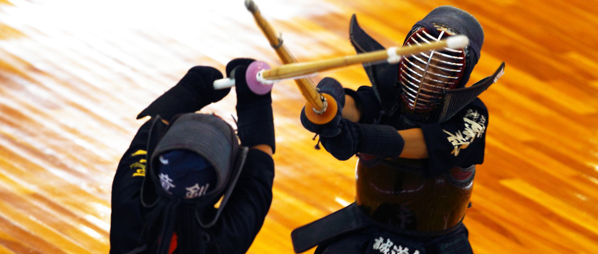
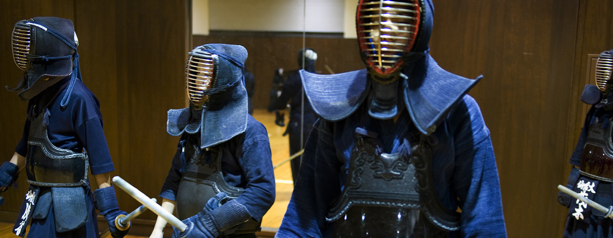
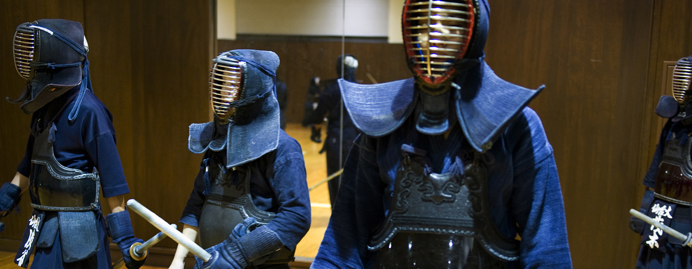
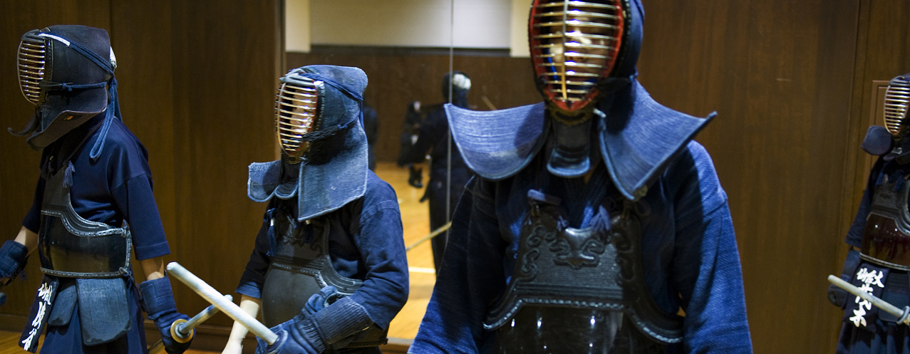
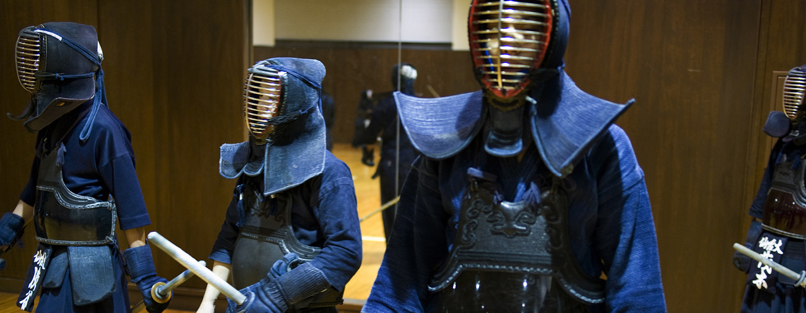

 




Kendo (剣道 kendō, lit. "sword way") is a modern Japanese martial art, which descended from swordsmanship (kenjutsu) and uses bamboo swords (shinai) and protective armour (bōgu). Today, it is widely practiced within Japan and many other nations across the world. Kendo is an activity that combines martial arts practices and values with strenuous physical activity.
In 1975, the All Japan Kendo Federation (AJKF) developed then published "The Concept and Purpose of Kendo" which is reproduced below.
Kendo training is quite noisy in comparison to some other martial arts or sports. This is because kendōka use a shout, or kiai (気合い), to express their fighting spirit when striking. Additionally, kendōka execute fumikomi-ashi (踏み込み足), an action similar to a stamp of the front foot, when making a strike.
Kendo techniques comprise both strikes and thrusts. Strikes are only made towards specified target areas (打突-部位 datotsu-bui) on the wrists, head, or body, all of which are protected by armour. The targets are men, sayu-men or yoko-men (upper left or right side of the men), the right kote at any time, the left kote when it is in a raised position, and the left or right side of the dō. Thrusts (突き tsuki) are only allowed to the throat. However, since an incorrectly performed thrust could cause serious injury to the opponent's neck, thrusting techniques in free practice and competition are often restricted to senior dan graded kendōka.